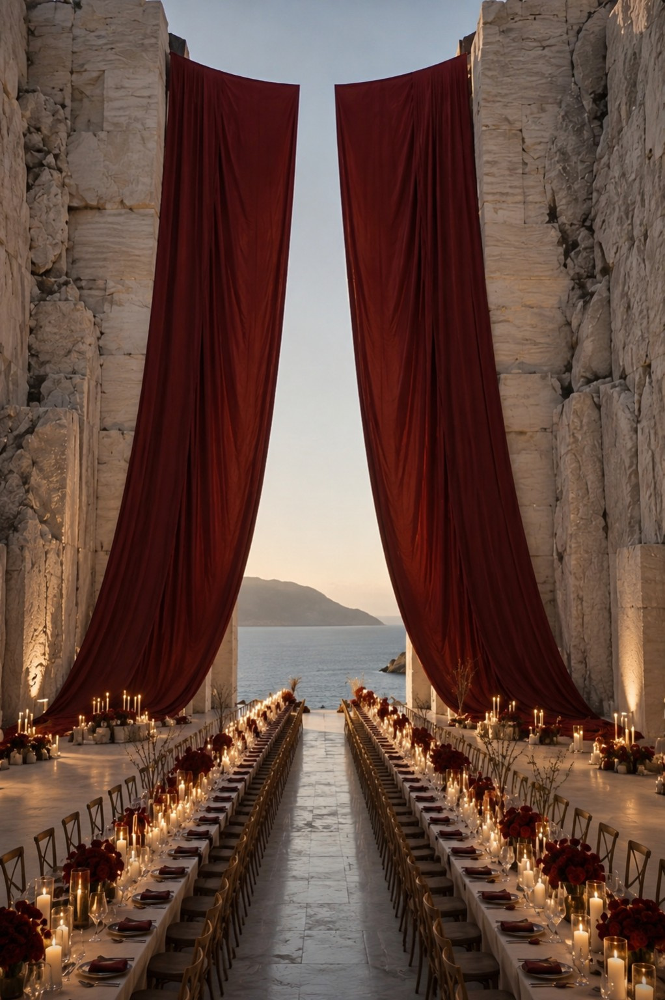
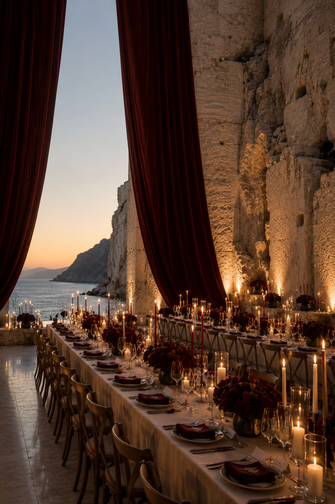
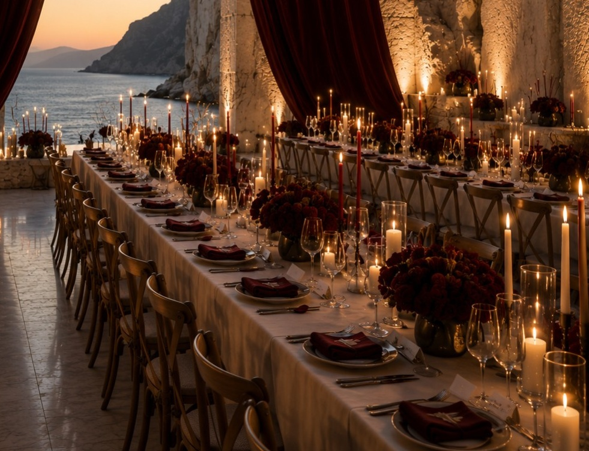
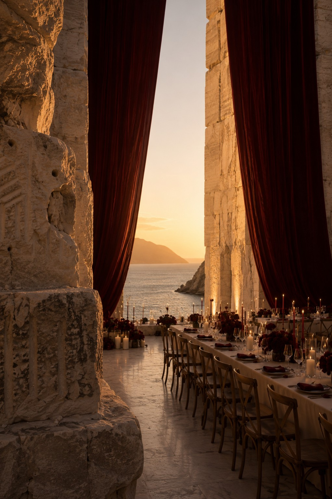

Design Dossier
Visual language, story, palette and atmosphere.
Design Edition No. 01
A coastal quarry wedding study in stone, burgundy and horizon.
Request Private Access →Concept
This edition studies a wedding world built from the venue itself: its height, quarry walls, horizon line, candle rhythm and the deep red gesture of suspended fabric.




Where It Can Exist
Cave Bianche, Cava Regia, Lithica Mallorca, coastal quarry spaces, limestone estates, architectural ruins or private stone venues with a strong processional axis.
You do not need to begin with one. If you are drawn to this direction, the atelier can help source and coordinate a real venue whose architecture, proportions, setting and atmosphere support it.
Inside the Edition
Visual language, story, palette and atmosphere.
Scale, axis, focal moments and guest flow.
Stone, textile, candlelight, florals and build logic.
How to translate the idea into a real place.
Indicative ranges for reduced and full interpretations.
A cleaner handoff for planners and creative teams.
Private Access
The public page is a preview only. The complete customer edition, PDFs and usage documents are delivered privately after purchase and license confirmation.